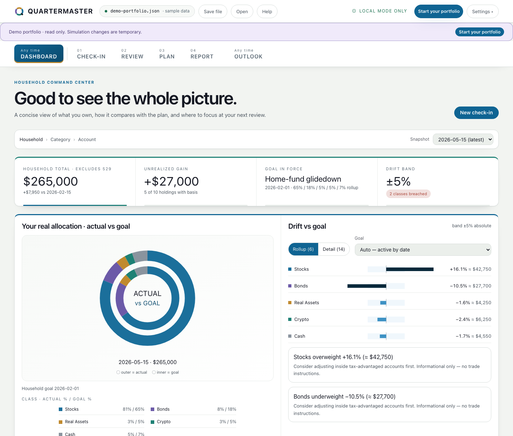
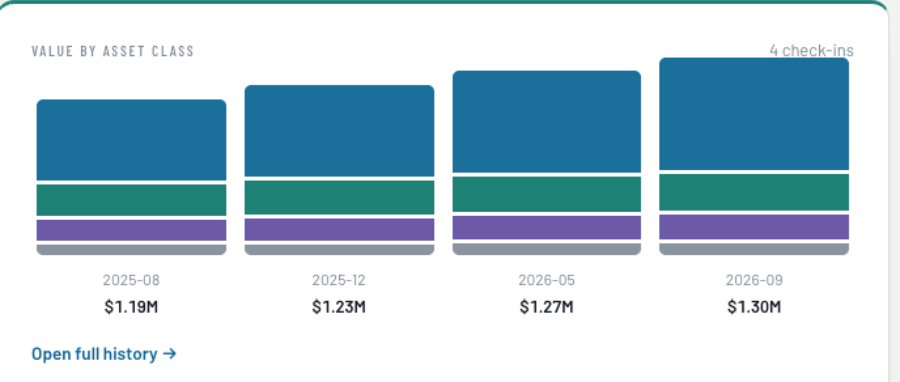

1Total portfolio value
$265,000Tracked investments across the household, excluding the 529 goal.
See your complete investment allocation, uncover potential tax drag across account types, and model the goals your portfolio needs to fund.
No account linking. Your portfolio data stays in a file you control. Privacy

1 2Tracked investments across the household, excluding the 529 goal.
Both are outside the household’s ±5-point review band.
Not the largest holding—the costliest placement in this sample.
Hold the bond exposure in the 401(k) and the equity exposure in taxable. Future 401(k) withdrawals may be taxable.
Single · $200K–$400K income · Massachusetts. Illustrative estimate based on the assumptions shown in the app. Tax effects are simplified and may omit future taxes, plan restrictions, trading costs, and changes in yields or law.
$90K annual after-tax spending · $3,500 monthly Social Security at 67
$15K today · $9K annual contributions · $25K per college year
Illustrative sample data and assumptions. Simulations illustrate possibilities, not forecasts or guarantees. Not investment, tax, or legal advice.
Redirect new contributions toward underweight bonds.
FXNAX location. Consider an allocation-neutral FXNAX/FXAIX swap after confirming plan availability and tax details.
Stocks are +16.1 percentage points over target and bonds −10.5 points under.
Quartermaster doesn’t connect to your financial accounts or upload your holdings. Your work stays in a private portfolio file that you save and reopen.
No affiliate commissions · no products to sell · no custody or trading


Introductory release—your feedback helps decide what Quartermaster improves next.